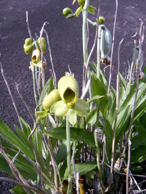
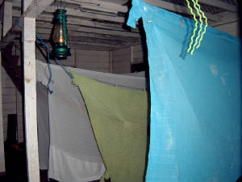
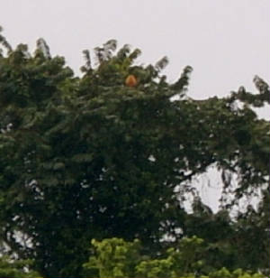
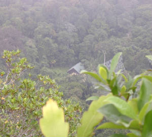
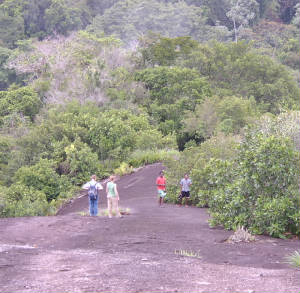
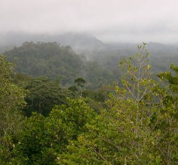

|
by Pascal
With Friends to Voltzberg
(Voltz Mountain)
Our teacher’s friends (the Ward family of four) came to visit from the US. On March 1st and
2nd we went to the Voltzberg. I was the leader on the trail. I occasionally
had some trouble, as the trail is not well marked and there are many side paths, especially near the monkey research area.
Most of my trips along this trail have been to carry supplies in for visitors. Then
I get paid by how many kilos of food and water I carry. We go as fast as possible and do not stop to look at animals or plants.
This
trip was slower than usual for me but it was an enjoyable journey. I always say that I hate hiking, but hiking is always fun
with the right people. Our visitors enjoyed looking at the plants and animals very much. We saw four different species of
monkey, squirrel, brown capuchin, black spider and red howler on this overnight trip.
| orchid photo by Greg Ward |

|
We left our island home after lunch by canoe. After a short ride
up the river we were dropped at the Voltzberg Trail head which is also where the monkey research station is located. Just before the Voltzberg Hammock Camp you reach a large granite outcropping. The
granite is very old and weathered. A few plants that tolerate the hot, dry conditions
can live here. This is the first view of the Voltzberg, a 400m black granite
sugarloaf. It has very steep sides except on the east where there is a way to
scramble up to the top. We covered the 7km to the hammock camp at the base of the Voltzberg by 4pm.
We dropped our bags and went straight to the Cock of the Rock lek (display and mating grounds). The trail to the Cock
of the Rock lek is narrow through thick undergrowth. It takes an hour to go and come back, plus everyone wants to watch the
very colorful male birds showing off their plumage and making noises to attract females.
They look and sound like toys.
It was almost dark when we returned to camp to start supper. When we went
inside we got a nasty surprise. The whole place was dirty; there were dirty dishes and a big plastic bucket filled with rotten
water. After cleaning (we kids didn’t do much of that) we had some delicious pasta. Mr. and Mrs. Ward were the cooks. The two Ward girls, Hannah and Eva played cards with Bryan and Omar while I wrote
in my journal. The adults were all tired so they sent us to our hammocks at 9pm. The hammocks have mosquito nets that hang over them all the way to the floor. I never feel comfortable sleeping in a hammock the first night, so I woke up very
early in the morning. So did everyone else.
We all talked about who snored; there were twelve of us in our party.

|
| hammock mosquito nets |

|
| Can you find the howler monkey in the top of this tree? |
We had an early breakfast and headed for the top of the mountain. It
was very foggy. We stopped on the open plateau to watch for birds and saw a howler
at the top of a tree busily foraging for food.
We walked a kilometer through the forest to the place where you scramble
up the mountain’s spine. Soon we were above the rainforest surrounded by
a blanket of mist. It is very steep and hard work. It was good to climb early before the sun had heated the black rock.
We could see our camp through the thinning mist from the top. We hurried
down to pack up, clean up and return to the island. The Wards were flying back
to the capital to go home that very afternoon. We needed to get back to the island
before lunch. Bryan and I carried out a lot of trash that previous visitors had left.
We walked very fast to cover the 7km in less than two hours. It was a
very fun short trip and I wouldn’t deny that I would do it again.

|
| Hammock camp from the Voltzberg summit |
`
`
`
`
`
`
`
`
`
`
`
`
`
`
`
`
`
`


|
| View of forest through fog |
~~~~
|